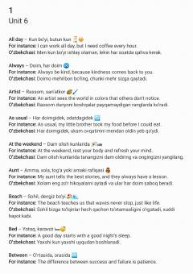

U6Ingliz tilidagi 6-bo'lim so'zlari va ularning o'zbekcha tarjimasi misollar bilan.
Ushbu qo'llanma ingliz tilidagi 6-bo'lim lug'at boyligini o'rganishga bag'ishlangan bo'lib, har bir so'z uchun o'zbekcha tarjimasi va misol jumlalar keltirilgan. Material so'zlarni yodlashni osonlashtirish hamda ularni kundalik hayotda qo'llash ko'nikmalarini oshirishga yordam beradi. Kitob til o'rganuvchilar va umumiy o'quvchilar uchun mo'ljallangan.